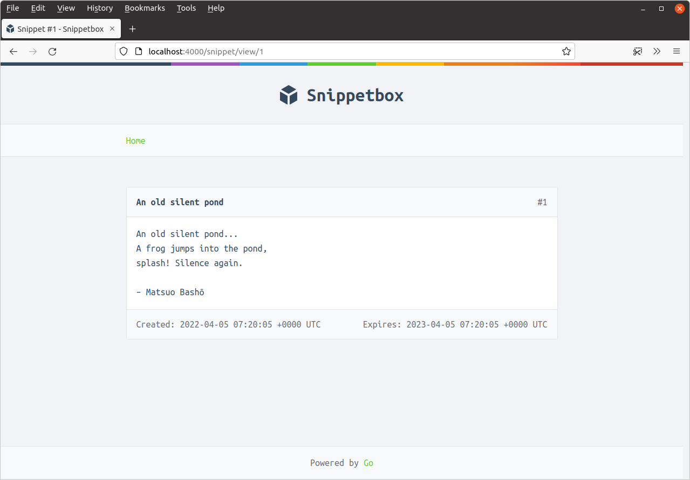

کش کردن قالبها
قبل از اینکه عملکرد بیشتری به قالبهای HTML اضافه کنیم، زمان خوبی است تا بهینهسازیهایی در کد پایه انجام دهیم. در حال حاضر دو مشکل اصلی وجود دارد:
هر بار که صفحه وب را رندر میکنیم، برنامه ما فایلهای قالب مربوطه را با استفاده از تابع
template.ParseFiles()میخواند و تجزیه میکند. میتوانیم از این کار تکراری با تجزیه یکباره فایلها - هنگام شروع برنامه - و ذخیره قالبهای تجزیه شده در یک کش در حافظه جلوگیری کنیم.در هندلرهای
homeوsnippetViewکد تکراری وجود دارد و میتوانیم این تکرار را با ایجاد یک تابع کمکی کاهش دهیم.
بیایید ابتدا نکته اول را بررسی کنیم و یک نقشه در حافظه با نوع map[string]*template.Template برای کش کردن قالبهای تجزیه شده ایجاد کنیم. فایل cmd/web/templates.go خود را باز کنید و کد زیر را اضافه کنید:
package main import ( "html/template" // New import "path/filepath" // New import "snippetbox.alexedwards.net/internal/models" ) ... func newTemplateCache() (map[string]*template.Template, error) { // Initialize a new map to act as the cache. cache := map[string]*template.Template{} // Use the filepath.Glob() function to get a slice of all filepaths that // match the pattern "./ui/html/pages/*.tmpl". This will essentially gives // us a slice of all the filepaths for our application 'page' templates // like: [ui/html/pages/home.tmpl ui/html/pages/view.tmpl] pages, err := filepath.Glob("./ui/html/pages/*.tmpl") if err != nil { return nil, err } // Loop through the page filepaths one-by-one. for _, page := range pages { // Extract the file name (like 'home.tmpl') from the full filepath // and assign it to the name variable. name := filepath.Base(page) // Create a slice containing the filepaths for our base template, any // partials and the page. files := []string{ "./ui/html/base.tmpl", "./ui/html/partials/nav.tmpl", page, } // Parse the files into a template set. ts, err := template.ParseFiles(files...) if err != nil { return nil, err } // Add the template set to the map, using the name of the page // (like 'home.tmpl') as the key. cache[name] = ts } // Return the map. return cache, nil }
مرحله بعدی، مقداردهی اولیه این کش در تابع main() و در دسترس قرار دادن آن برای هندلرهای ما به عنوان یک وابستگی از طریق ساختار application است، مانند این:
package main import ( "database/sql" "flag" "html/template" // New import "log/slog" "net/http" "os" "snippetbox.alexedwards.net/internal/models" _ "github.com/go-sql-driver/mysql" ) // Add a templateCache field to the application struct. type application struct { logger *slog.Logger snippets *models.SnippetModel templateCache map[string]*template.Template } func main() { addr := flag.String("addr", ":4000", "HTTP network address") dsn := flag.String("dsn", "web:pass@/snippetbox?parseTime=true", "MySQL data source name") flag.Parse() logger := slog.New(slog.NewTextHandler(os.Stdout, nil)) db, err := openDB(*dsn) if err != nil { logger.Error(err.Error()) os.Exit(1) } defer db.Close() // Initialize a new template cache... templateCache, err := newTemplateCache() if err != nil { logger.Error(err.Error()) os.Exit(1) } // And add it to the application dependencies. app := &application{ logger: logger, snippets: &models.SnippetModel{DB: db}, templateCache: templateCache, } logger.Info("starting server", "addr", *addr) err = http.ListenAndServe(*addr, app.routes()) logger.Error(err.Error()) os.Exit(1) } ...
بنابراین، در این مرحله، ما یک کش در حافظه از مجموعه قالب مربوط به هر یک از صفحات خود داریم و هندلرهای ما از طریق ساختار application به این کش دسترسی دارند.
حالا بیایید مشکل دوم کد تکراری را بررسی کنیم و یک متد کمکی ایجاد کنیم تا بتوانیم به راحتی قالبها را از کش رندر کنیم.
فایل cmd/web/helpers.go خود را باز کنید و متد render() زیر را اضافه کنید:
package main import ( "fmt" // New import "net/http" ) ... func (app *application) render(w http.ResponseWriter, r *http.Request, status int, page string, data templateData) { // Retrieve the appropriate template set from the cache based on the page // name (like 'home.tmpl'). If no entry exists in the cache with the // provided name, then create a new error and call the serverError() helper // method that we made earlier and return. ts, ok := app.templateCache[page] if !ok { err := fmt.Errorf("the template %s does not exist", page) app.serverError(w, r, err) return } // Write out the provided HTTP status code ('200 OK', '400 Bad Request' etc). w.WriteHeader(status) // Execute the template set and write the response body. Again, if there // is any error we call the serverError() helper. err := ts.ExecuteTemplate(w, "base", data) if err != nil { app.serverError(w, r, err) } }
با تکمیل این موارد، حالا میتوانیم نتیجه این تغییرات را ببینیم و کد هندلرهای خود را به طور چشمگیری سادهتر کنیم:
package main import ( "errors" "fmt" "net/http" "strconv" "snippetbox.alexedwards.net/internal/models" ) func (app *application) home(w http.ResponseWriter, r *http.Request) { w.Header().Add("Server", "Go") snippets, err := app.snippets.Latest() if err != nil { app.serverError(w, r, err) return } // Use the new render helper. app.render(w, r, http.StatusOK, "home.tmpl", templateData{ Snippets: snippets, }) } func (app *application) snippetView(w http.ResponseWriter, r *http.Request) { id, err := strconv.Atoi(r.PathValue("id")) if err != nil || id < 1 { http.NotFound(w, r) return } snippet, err := app.snippets.Get(id) if err != nil { if errors.Is(err, models.ErrNoRecord) { http.NotFound(w, r) } else { app.serverError(w, r, err) } return } // Use the new render helper. app.render(w, r, http.StatusOK, "view.tmpl", templateData{ Snippet: snippet, }) } ...
اگر برنامه را مجدداً راهاندازی کنید و سعی کنید از http://localhost:4000 و http://localhost:4000/snippet/view/1 بازدید کنید، باید ببینید که صفحات دقیقاً به همان روش قبلی رندر میشوند.


تجزیه خودکار بخشهای جزئی
قبل از اینکه ادامه دهیم، بیایید تابع newTemplateCache() خود را کمی انعطافپذیرتر کنیم تا به طور خودکار تمام قالبهای موجود در پوشه ui/html/partials را تجزیه کند - به جای فقط فایل nav.tmpl ما.
این کار در صورت اضافه کردن بخشهای جزئی اضافی در آینده، زمان، تایپ و خطاهای احتمالی را صرفهجویی میکند.
package main ... func newTemplateCache() (map[string]*template.Template, error) { cache := map[string]*template.Template{} pages, err := filepath.Glob("./ui/html/pages/*.tmpl") if err != nil { return nil, err } for _, page := range pages { name := filepath.Base(page) // Parse the base template file into a template set. ts, err := template.ParseFiles("./ui/html/base.tmpl") if err != nil { return nil, err } // Call ParseGlob() *on this template set* to add any partials. ts, err = ts.ParseGlob("./ui/html/partials/*.tmpl") if err != nil { return nil, err } // Call ParseFiles() *on this template set* to add the page template. ts, err = ts.ParseFiles(page) if err != nil { return nil, err } // Add the template set to the map as normal... cache[name] = ts } return cache, nil }